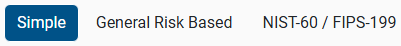

Security Assurance Level (SAL)
Depending on the selected assessment type, user can select Security Assurance Level (SAL) within the Prepare menu to display the Security Assurance Level (SAL) page. The SAL is the level of security required for the organization, facility, system, or subsystem being assessed. CSET calculates the recommended SAL for the assessment based on the user's answers to a series of questions relating to the potential worst-case consequences of a successful cyber attack. The selected SAL determines the level of rigor and number of questions required for the assessment.
SAL Methodologies
|